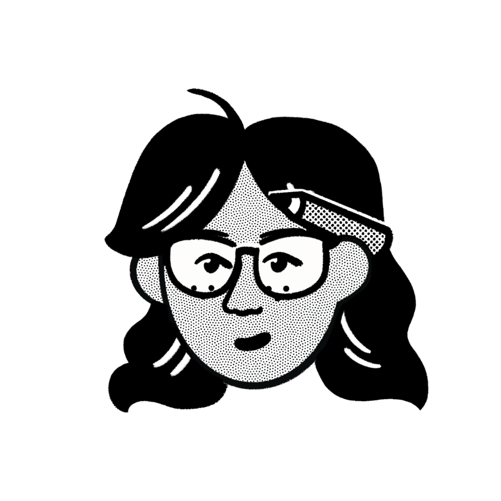

Hi
I’m Iris Xu, a software engineer interested in making creative, useful tools that reach real people.
Three years ago, I decided to study computer science because I wanted to gain the skills that would allow me to create tools for the problems that I care about. Right now, I feel like it’s the best time to leverage that agency.
There is a gap between what today’s models can do and what people are usually using them for. I want to create something in that gap — to engineer products with creativity and technical skills that help people solve problems to a greater capacity.
I’m using this site as a playground to explore ideas and try things out. I’m still learning to feel less intimidated by the possibility of getting things wrong. It can be hard to find problems that people actually care about, and there may be hundreds of existing solutions already. Today, I would like to see that uncertainty as an invitation to be curious, adventurous, and creative.
Apart from programming, I enjoy visual and media arts, particularly film and photography. I also spend time knitting, bouldering, and exploring the city.
